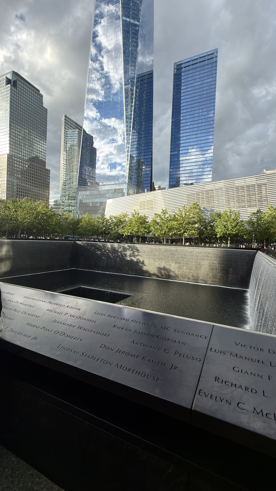
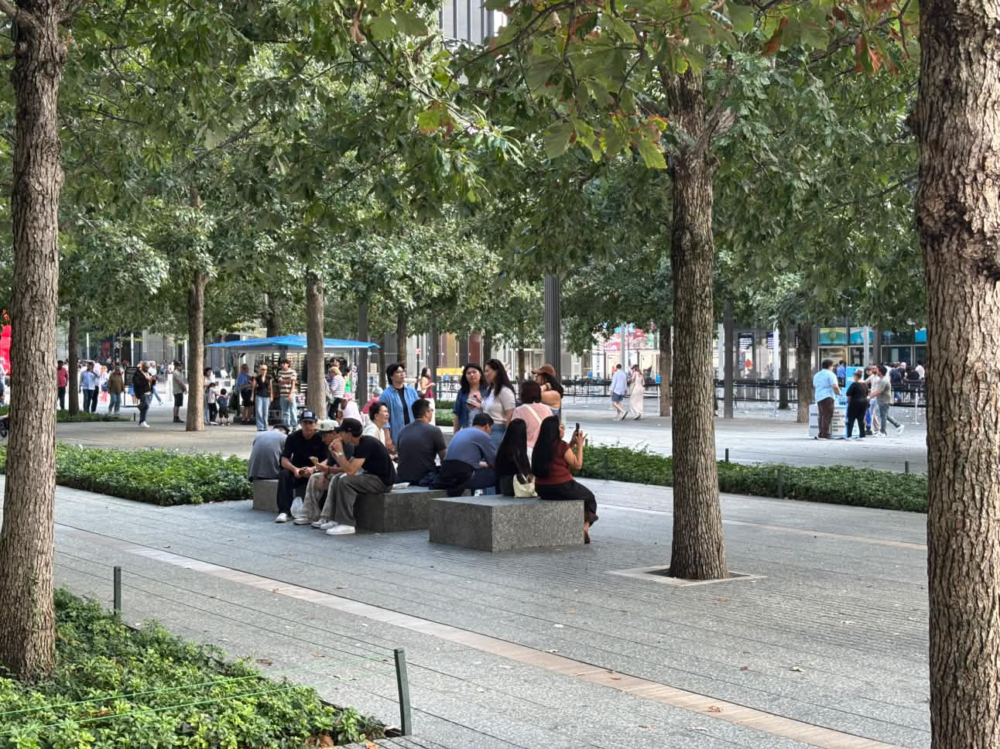
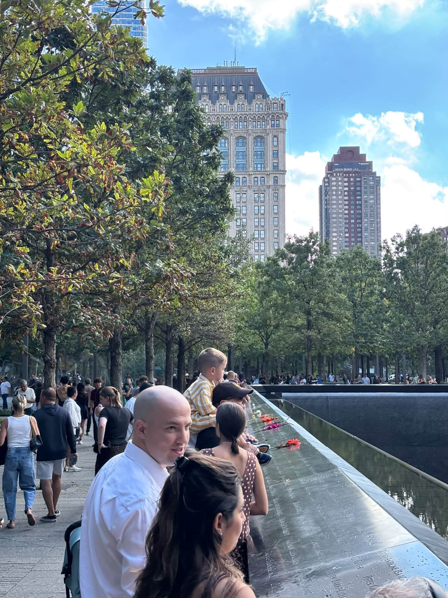
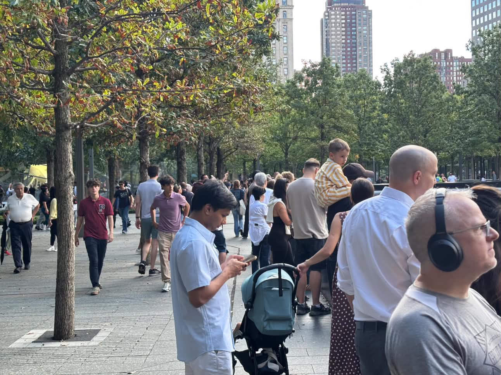

START WALK
↓
↓
↓
STOP 1 — APPROACH
Where am I going?

↓
↓
↓
STOP 2 — ARRIVAL
I had passed this place many times before, but I had never stopped to look closely.

↓
↓
↓
STOP 3 — LISTEN
What do you hear? Focus on the sound.
Sounds like noise, right?
What is making this sound?
Surprisingly, it is the sound of water falling into the memorial pool.
↓
↓
↓
STOP 4 — LOOK CLOSER
When I moved closer, I noticed the small details of the memorial.


↓
↓
↓
STOP 5 — OBSERVE
I observed the people around the memorial.
What were people doing?
-
Resting

-
Watching the waterfall

-
Looking at their phones

↓
↓
↓
STOP 6 — STAY FOR A MOMENT
Before leaving, I stayed for one more moment.
Most of the people there seemed to be tourists, so the memorial felt more like a tourist destination than a quiet place of remembrance. It was also much noisier than I had expected.
However, seeing so many people visit this place made me realize that visiting and experiencing the memorial can also be another way of remembering the event.
Even with the noise of the crowd, the sound of falling water continued in the background.
I stayed for a moment, listened again, and then left.